Getting Started
This document provides beginning users with the basic knowledge needed to get started using the SimVascular suite of software applications. The SimVascular software suite comprises the following applications
- SimVascular - Interactive image-based modeling pipeline application
- svZeroDSolver - 0D (lumped parameter) solver
- svOneDSolver - 1D fluids solver
- svSolver - Computational fluid dynamics (CFD) solver
- svFSI - Coupled fluid-solid solver
Throughout this document the interactive image-based modeling pipeline application is referred to as just SimVascular. Input files for all of the solver applications can be created and optionally executed from the SimVascular GUI.
The Introduction section describes important SimVascular concepts. The following GUI section then describes the SimVascular graphical user interface (GUI) and its basic functionality. The Tutorial section demonstrates the steps in the SimVascular image-based modeling pipeline, from medical image data segmentation to patient-specific blood flow simulation. A model of an aorta and two iliac arteries is created from medical imaging data. A finite element mesh is then generated from the model and used in a CFD simulation of blood flow in the aorta and iliac arteries.
Another useful resource for learning how to use SimVascular are the SimVascular Online Tutorials. This series of recent videos demonstrate all the steps in the modeling pipeline presented in the Tutorial below.
Images taken of the Demo Project are used to illustrate certain concepts throughout this document.
Introduction
SimVascular is an interactive application used to created patient-specific geometric models of human vasculature from 3D medical imaging data acquired for a specific anatomical region. These models are then used as the basis for blood flow simulations using various numerical methods. The sequence of steps used by SimVascular to do this is called the image-based modeling pipeline.
The SimVascular graphical user interface (GUI) is used to interactively manage each step in the image-based modeling pipeline. The GUI provides different graphical controls (e.g. buttons) used to input the data required to generate the output (e.g. geometric model) of each step. The display of image and geometrical data in a graphics window can be interactively controlled using the mouse. Information from image and geometrical data can also be queried using the mouse and allows selecting, for example, a point in 3D space
Modeling Pipeline
The SimVascular image-based modeling pipeline comprises the following steps
- Image visualization - Identify anatomic features in the imaging data
- Path planning - Vessel centerlines geometry is created using 2D image slices to identify vessel lumens
- Segmentation - Vessel lumens are segmented from 2D slice probes of 3D image data oriented perpendicular to positions along paths
- Modeling - A geometric model of a vessel is created by generating a surface fitted to groups of 2D segmentations. Individual vessels are then joined together to form a complete 3D solid model of vascular anatomy.
- Meshing - A finite element mesh is generated from the 3D solid model
- Simulation - Perform a finite element computational fluid dynamics (CFD) simulation of blood flow in the vascular anatomy
Each step in the pipeline uses data created by the preceding steps. For example, the Segmentation step uses path geometry created in the Path planning step to position and orient 2D image slices used to segment a vessel lumen.
A visual representation of the pipeline steps (Fig. 1) provides a sense of the (primarily geometric) data created in each step.

Tools
The SimVascular application provides a set of core Tools (aka plugins) implementing methods for each step in the SimVascular image-based modeling pipeline. The follow lists each core Tool type and primary function
- Paths - Interactively creates paths based on image data
- Segmentations - Segments 2D slices along path geometry using various segmentation techniques
- Models - Generates surface and solid models from segmentations
- Meshes - Generates a finite element mesh from a solid model
- Simulations - Performs a CFD simulation
- svFSI - Performs a coupled fluid-solid interaction simulation
- ROMSimulations - Performs a reduced-order model (ROM) simulation
One or more instances of these Tool types are created to implement an image-based modeling pipeline for a particular application. An instance of a Tool is called a Data Node.
Tools typically use data from other tools to perform their functions. For example, the Segmentations Tool uses paths created by the Paths Tool to position and orient 2D slices in the 3D image volume. The data used by a Tool is specified by the user.
The geometry created by each Tool is typically stored in Visualization Toolkit (VTK) VTP and VTU VTK File Formats .
Each Tool has a panel containing GUI controls (i.e. widgets) used to specify the parameters that control tool behavior. A Tool panel is displayed using the Data Manager .
Creating Tool Instances
An instance of a particular Tool type is created using options selected from Data Manager Menus. Some Tool instances can be created in two ways based on the source of the data used by the Tool- Internal - Data used by the Tool is obtained from another Tool.
Example: A Models Tool uses segmentations created by a Segmentations Tool. - External - Data used by the Tool is read in (imported) from a file. The instances of Paths,
Segmentations and Models Tools can be created by reading data from a file.
Example: Models Tool geometry is read in from a VTK VTP file.
Projects
The Tools that comprise a SimVascular pipeline and the data they create are organized as a SimVascular Project. Tools are added to a Project interactively using the GUI. Multiple instances of most Tools can be added to a Project.
A SimVascular Project is stored in a directory on disk using the location and name provided by the user when creating a Project. The Project directory contains sub-directories for each core Tool. Each Tool sub-directory in turn stores data created by each Tool instance in files named by the instance. The data stored in Tool sub-directories are typically of two types
- Geometry Data - The geometry created by the Tool stored in VTK VTP and VTU format files.
- GUI State Data - The values of the Tool panel GUI controls stored in an XML format file.
An example Project directory is shown in Fig. 2. The .msh, .mdl, .pth, .ctgr and .sjb files are XML format files storing values for all GUI controls.
The GUI Data Manager is used to view a Project as a hierarchy of Tools and Data Nodes representing individual Tool data: images, paths, segmentations, models, meshes, and simulation jobs. The Data Manager provides an interface to interactively manage adding/removing Tool instances and changing some of the properties used to display the geometric data created by a Tool (e.g. color).
The Data Manager view of the Demo Project created following the steps demonstrated in the tutorial section is shown in Fig. 3.

A more complete discussion of the Data Manager is given below.
MITK Framework
The SimVascular application uses the Medical Imaging Interaction Toolkit (MITK) framework for medical imaging applications incorporating a plugin architecture. Standard MITK tools have been incorporated into SimVascular: a graphics display window with three orthographic 2D views and one 3D view, image file readers (e.g. DICOM), an image navigator tool for displaying 2D image planes, image processing, and volume rendering.
Graphical User Interface
The SimVascular GUI provides an interface for interactively managing the input of data needed for each step in the image-based modeling pipeline. The GUI provides different graphical controls (aka widgets) used to input data values and methods to interact with and query image and geometrical data in a graphics window.
The following table lists the controls used by the SimVascular GUI
| Control | Description | Example |
|---|---|---|
| Button | A rectangular region that typically displays a text label describing its action. A button performs an action when pressed (clicked on) | |
| CheckBox | A rectangular region that permits the user to make a binary choice, i.e. a choice between one of two possible mutually exclusive options | |
| ComboBox | A drop-down list that allows the user to select a value from the list. | |
| DialogBox | A popup window that asks a user for input. |  |
| FileBrowser | A popup window used to select a file or directory. |  |
| Icon | A small graphical representation of a Tool or file. | |
| InformationPopup | A popup window that provides information to the user. |  |
| Menu | A list of choices offered to the user for selection. |  |
| MenuBar | A thin, horizontal bar containing the text labels for a group of menus. | |
| QuestionPopup | A popup window that asks the user to respond to a yes/no question. |  |
| Slider | A horizontal bar used to set a value by moving an indicator on the bar horizontally. Values can also be entered in the text box. | |
| SpinBox | A rectangular region used to choose a value by clicking the up/down buttons or pressing up/down on the keyboard to increase/decrease the value currently displayed. | |
| Table | A rectangular region that arranges data (e.g. text or other widgets) into rows and columns of cells. Data can be modified by selecting a cell in the table. |  |
| TextBox | A rectangular region used to entry string, integer or float values. | |
| ToolBar | A row of buttons at the top of window that controls software functions. | |
| ToolBox | An area of a Tool panel that contains multiple pages of GUI widgets identified by a section
of rectangles with text at the Toolbox bottom. Selecting a rectangle shows another page. |
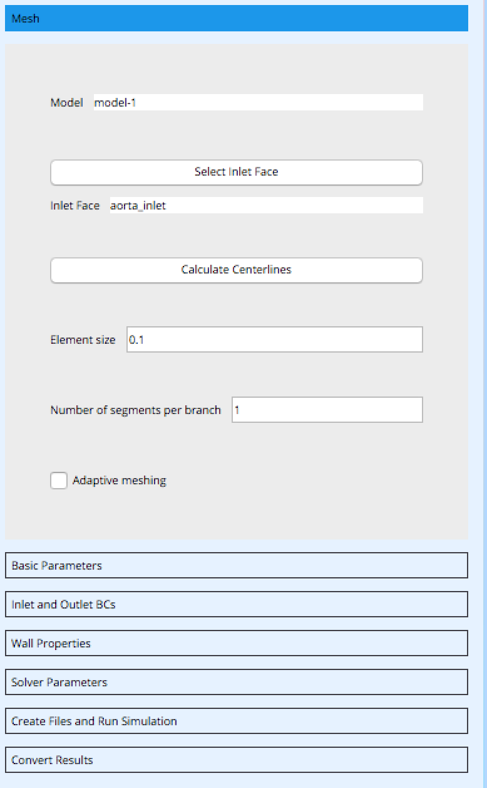 |
The SimVascular main window GUI is composed of a MenuBar, ToolBar, Data Manager, Image Navigator and Display. An additional Tool Panel is displayed on the right side of the window when a Tool is active.

MenuBar
The MenuBar contains File, Edit, Tools, Window and Help menu items.

File Menu
The File menu is used to create, open and save SimVascular Projects. Creating or opening a Project is typically the first step when using SimVascular.
Tools Menu
The Tools menu is used to add a SimVascular Tool to the Tool Panel. It This does not add a new Tool to the Project. The Level Set menu item creates a level set segmentation Tool (see 3D Level Set Segmentation ). The Python Console menu item opens a panel used to execute Python scripts. (see Python Console ). The other menu items are mostly MITK tools that are typically not often used.
ToolBar
The ToolBar is composed of three sections. The first section contains icons used to save a Project, undo an operation, hide/show the Image Navigator and toggle the Axial, Sagittal and Coronal image scan slices.

| Icon | Description |
|---|---|
| |
Save the Project. |
| Undo an operation. | |
| |
Hide/show the Image Navigator. |
| |
Hide/show the axial image scan slice. |
| |
Hide/show the sagittal image scan slice. |
| |
Hide/show the coronal image scan slice. |
The second section duplicates the Tools menu using icons.
The third second section duplicates the Tools menu using icons.
Display
The GUI main window Display area uses a four-window view to display 2D and 3D views of image and geometry data as the standard layout. The four-window view provides an interactive environment to view geometry data created by Tools in context with medical image data. This enables matching geometric data (e.g. models) to anatomical features present in the imaging data.
The layout of the Display windows and its GUI components are shown in Fig. 5.

The three 2D views represent the principal planes used in medical imaging to describe the location of anatomical structures defined as
- axial - Divides the body into top and bottom sections. Upper left 2D window.
- coronal - Divides the body into back and front, or posterior and anterior, sections. Upper right 2D window.
- sagittal - Divides the body into left and right sections. Lower left 2D window.
Navigation
The principal planes slice is represented by a pair of crosshairs the 2D view windows. Selecting a point with the left mouse button in a 2D view centers the crosshair on that point. Pressing the right mouse button and moving the mouse zooms in and out. Scrolling the mouse wheel changes the principal plane slice for which the mouse cursor is in.
Changing the principal planes slice changes the values displayed in the Image Navigator and vice versa.
The function of the mouse buttons depends on the window the mouse cursor is in.
| Mouse Button | Function |
|---|---|
| Left | Moves the crosshairs, select image points and pixel values |
| Right | Zooms the 2D view |
| Mouse Wheel Scrolling | Changes the principal plane slice |
| Mouse Button | Function |
|---|---|
| Left | Rotates the 3D view |
| Right | Zooms the 3D view |
| Shift-left | Translates the 3D view |
Window Menus
The three icons
 displayed in the upper right
corner each window provides options to customize the view and crosshair behavior when selected using the left mouse button.
displayed in the upper right
corner each window provides options to customize the view and crosshair behavior when selected using the left mouse button.
| Icon | Menu or Action | Description |
|---|---|---|

|
|
|
| Changes the view layout | The view is changed to a full-screen layout for the window and plane the mouse cursor is in
When selected it changes to |
|
| Changes the view layout | Expands the corresponding window to full screen within the four window view | |
| 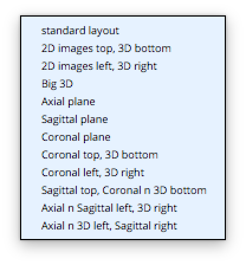 |
|
Image Windowing
The Image Windowing tool is used to adjust image brightness and contrast using a technique called Windowing, also known as gray-level mapping, contrast stretching, histogram modification or contrast enhancement. Windowing manipulates the image greyscale component using image values to change the appearance of the image to highlight particular structures. The image brightness is adjusted by changing the window center. The image contrast is adjusted by changing the window width.
A blue region in the Image Windowing tool shows then window center and window width.
The window center is changed by selecting the center of the Image Windowing tool blue region with the left mouse button and moving up or down.
The window width is changed uniformly about the window center by selecting either end of the Image Windowing tool blue region with the left mouse button and moving up or down.
The window width is changed non-uniformly about the window center by selecting either end of the Image Windowing tool blue region with using shift-left mouse button and moving up or down.
| Operation | Result |
|---|---|
| No operation, original image brightness and contrast |  |
| Move the window center up by placing the mouse cursor in the center of the Image Windowing tool blue region holding the left mouse button down while moving the mouse cursor up | 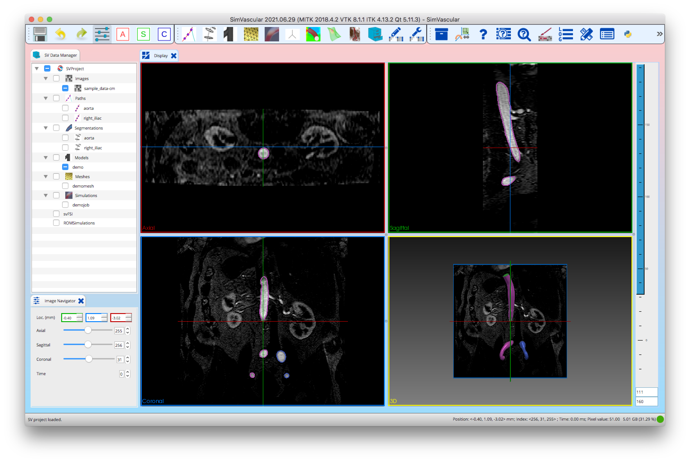 |
| Move the window center down by placing the mouse cursor in the center of the Image Windowing tool blue region holding the left mouse button down while moving the mouse cursor down |  |
| Reduce the window width uniformly around the window center by placing the mouse cursor in the upper boundary of the Image Windowing tool blue region holding and mouse button down while moving the mouse cursor down |  |
| Reduce the window width non-informally around the window center by placing the mouse cursor in the upper boundary of the Image Windowing tool blue region holding and pressing shift-left mouse button down while moving the mouse cursor down | 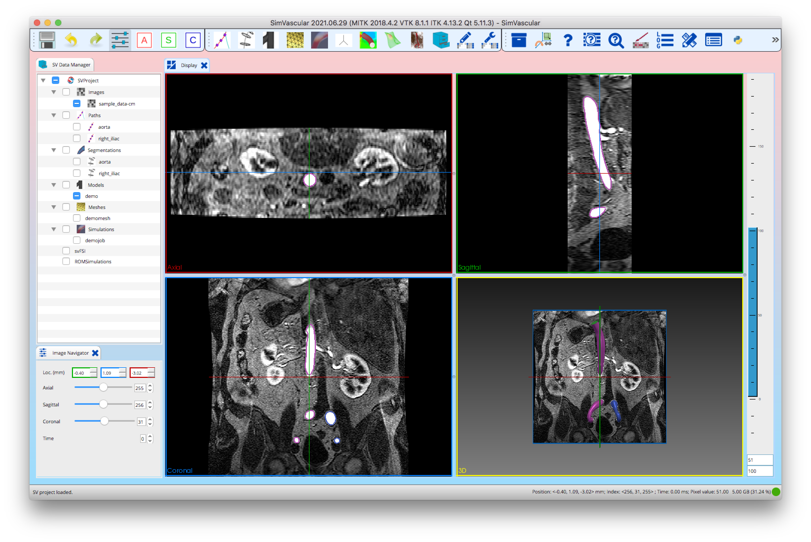 |
Selecting the Image Window Level tool with the right mouse button pops up the following menu

| Menu Option | Description |
|---|---|
| Hide Scale | Hide the Image Windowing tool scale |
| Set Slider Fixed | Disables modifying the window width and window center. |
| Use whole image grey values | Set the Image Windowing tool use the entire range of image values. |
| Use optimized levelwindow | Set the Image Windowing tool to use a range of image values that optimizes contrast and brightness. |
| Set Maximum Window | N/A |
| Default Level/Window | N/A |
| Change Scale Range | Displays a popup window used to manually change the upper and lower window width bounds. |
| Default Scale Range | Resets the upper and lower window width bounds to their default values. |
| Presets | Displays a menu of preset upper and lower window width bounds for various tissues acquired using CT. |
| Images | N/A |
Data Manager
The Data Manager is used to view a Project as a hierarchy of Tools and Data Nodes representing the data created by Tool instances: images, paths, segmentations, models, meshes, and simulation jobs. Most of the Tools produce geometry that can be interactively viewed in the 2D and 3D views of the Display area of the main window. The Data Manager provides an interface to interactively manage adding/removing Tool instances and changing some of the properties used to display the geometric data created by a Tool (e.g. color).
When creating a new Project the Data Manager displays a list of core Tool Types (Fig. 6).

Adding a new Tool to the Project creates a new Data Node under the appropriate Tool Type. The Data Manager view of the Demo Project created following the steps demonstrated in the Tutorial section is shown in Fig. 7.
The Data Manager hierarchy shown in Fig 7. indicates that the following Tool instances are defined for the Project as one or more Data Nodes
- Images - A single Tool instance named sample_data-cm
- Paths - Two Tool instances named aorta and right_iliac.
- Segmentations - Two Tool instances named aorta and right_iliac
- Models - A single Tool instance named demo
- Meshes - A single Tool named demomesh
- Simulations - A single Tool instance named demojob
Interacting with the Data Manager
Interaction with the Data Manager is performed using the mouse. The resulting action depends on if a Tool Type or a Data Nodes is selected. The mouse buttons have the following functions
| Mouse Button | Function |
|---|---|
| Left | Used to select GUI controls to manage Tool data visibility and expand/collapse Tool hierarchy |
| Left, double click |
Tool Type - Expand/collapse Tool Data Nodes Tool Data Node - Brings up the Tool panel |
| Right | Opens a Data Manager menu |
The Data Manager has two GUI controls that are selected with the left mouse button
| Control | Function | Example |
|---|---|---|
|
|
Selecting the arrow toggles the display of the Tool instances. Double clicking on a Tool Type performs the same function. |
Toggle off Toggle on |
|
|
Selecting the CheckBox toggles the display of Tool geometry in the Display.
The CheckBox changes to blue when on. Selecting the box for a Tool Type toggles the display for all instances of that Tool. |
Toggle off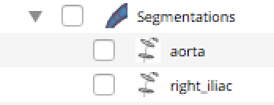 Toggle on 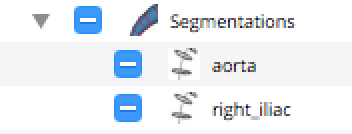 |
Data Manager Menus
The Data Manager menus used to manage Tools are opened using the right mouse button. Selecting a Tool Type opens a menu containing options common to all Tool Types and additional options specialized for a particular Tool Type. Specialized options are located at the bottom of a menu and are separated from the common options by a line (Fig 8.).
| Menu Option | Description |
|---|---|
| Global Reinit | Reset 2D/3D views of the Display using the maximum Cartesian space of all the Data Nodes in the Data Manager |
| Save … | Save the selected Data Node to a file |
| Reinit | Reset 2D/3D views of the Display using the Cartesian space of the selected Data Node in the Data Manager |
| Show only selected nodes | Show the selected Data Nodes in the Display |
| Toggle visibility | Show ( or hide) the selected Data Nodes in the Display if they are hidden (or visible) |
| Details | Show more information about the selected Data Node in a popup dialog, such as dimensions, spacing, etc. |
| Remove | Remove the Data Node from the Data Manager |
| Opacity | Change the opacity of the selected Data Node |
| Color | Selecting the colored Button brings a color palette used to change the color of the selected Data Node |
| Rename | Rename the selected Data Node |
| Copy | Copy the selected Data Node |
| Paste | Duplicate the copied Data Node in a folder in Data Manager |
The following table lists each Tool Type with a brief description of each of its specialized menu options.
| Tool Type | Menu | Description |
|---|---|---|
| Images |  |
Add/Replace Image - Add or replace the image volume data for the Project. Image data can be DICOM or VTK VTI files.
A Project can contain only a single image volume. Adding new image volume replaces the current one.
|
| Paths |  |
Create Path - Create an instance of a Paths tool. Paths are then created from Image tool data. Import Paths - Create an instance of a Paths tool from a Path data contained in SimVascular .pth or legacy .paths file. Export All as Legacy Paths - N/A |
| Segmentations |  |
Create Contour Group - Create an instance of a Segmentations tool. Segmentations are created using geometry from a Paths tool. Import Segmentations - Create an instance of a Segmentations tool from the data contained in a SimVascular .ctgr file. Import Legacy Segmentations - N/A Export All as Legacy Segmentations - N/A |
| Models |  |
Create Model - Create an instance of a Models tool.
A Model is created using segmentation geometry from one or more Segmentations tools. Import Solid Model - Create an instance of a Models tool from a solid model file. Supported file formats: VTP, STL and STEP.
A model can be imported into a Project without an image volume. After importing the model select the
Global Reinit Data Manager Menu option to view the model.
|
| Meshes |  |
Create Mesh - Create an instance of a Meshes tool.
A mesh is created using a model from a Models tool.
A mesh cannot be imported into a Project.
|
| Simulations |  |
Create Simulation job - Create an instance of a Simulations tool.
A CFD simulation job is created using a model from a Models tool and a mesh from
a Meshes tool. |
| svFSI |  |
Create svFSI job - Create an instance of a svFSI tool.
A multi-physics simulation job is created using a model from a Models tool and
a mesh from a Meshes tool. |
| ROMSimulations |  |
Create ROM Simulation job - Create an instance of a ROMSimulation tool. A reduced-order model (ROM) simulation job is created using a model from a Models tool. |
Tool Panel
The Tool Panel is a rectangular region located to the far right the SimVascular main window used to display GUI controls for a Tool. A Tool Panel is made visible by double-clicking with the mouse left button on a Data Node in the Data Manager (Fig. 9).

Double-clicking on another Data Node makes its Tool Panel visible. Multiple Tool Panel are organized using a GUI Tab controls (Fig. 10).

Selecting the X in the Tab control  with the left mouse button removes the SV Modeling Tool Panel.
with the left mouse button removes the SV Modeling Tool Panel.
Tool Panels may be visible when starting SimVascular. The last Tool Panels visible (active) when SimVascular was closed are displayed inactive (greyed-out). (Fig. 11).
Image Navigator
Image Navigator tool uses Sliders and Spinboxes to set the scan slice for each sagittal, coronal and axial planes. Changing the principal planes scan slice changes the changes the location of the crosshairs in the 2D views and vice versa.

| Control | Description |
|---|---|
| Changes the sagittal plane scan slice using image coordinates | |
| Changes the coronal plane scan slice using image coordinates | |
| 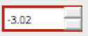 | Changes the axial plane scan slice using image coordinates |
| Changes the axial plane scan slice using image slice number | |
| Changes the sagittal plane scan slice using image slice number | |
| 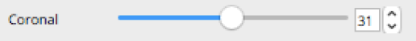 | Changes the coronal plane scan slice using image slice number |
| Changes the time step for time-resolved image data. |
Tutorial
This section demonstrates how to use the SimVascular image-based modeling pipeline to create a patient-specific geometric model of the human vasculature and perform a finite element computational fluid dynamics (CFD) simulation of blood flow for that model. A model of an aorta with left and right iliac arteries is created from an MR image volume.
The following lists the sections in this tutorial
- Starting SimVascular
- Create a Project
- Add Image Data
- Create Vessel Paths
- Create Segmentations
- Create Solid Model
- Create Finite Element Mesh
- Create CFD Simulation
The SimVascular Tutorial Project
is a complete SimVascular project containing the data created by each of these steps. It also includes a OSMSC0110-aorta directory
containing DICOM image data used in the tutorial.
Starting SimVascular
Once SimVascular has been Installed it is started
by selecting the  icon from a
platform’s list of applications (Fig. 1).
icon from a
platform’s list of applications (Fig. 1).

On Ubuntu and Windows a terminal is created for SimVascular to run in. Messages output from some SimVascular computations
(e.g. meshing) are written to the terminal. On MacOS no terminal is created so no SimVascular output can be seen.
SimVascular can also be started from the command line in a terminal using the path to the installation directory. The path includes the SimVascular build date YYYY-MM-DD on Ubuntu and Windows.
| Platform | Command |
|---|---|
| MacOS | /Applications/SimVascular.app/Contents/Resources/simvascular |
| Ubuntu | /usr/local/sv/simvascular/YYYY-MM-DD/simvascular |
| Windows (Power Shell) | &“C:\Program Files\SimVascular\SimVascular\YYYY-MM-DD\sv.bat” |
Create a Project
A SimVascular Project is a directory (folder) on disk used to organized and store data created by Tool instances that comprise a SimVascular pipeline. The Project directory location and name is provided by the user when creating the Project.
| GUI Action | Description |
|---|---|
 |
Select the MenuBar File / Create SV Project option |
 |
Enter Tutorial for the Project name in the Project Name TextBox.
Enter the name of the directory to store the Project in the Create in: TextBox. Press the OK Button.
The tutorial uses the /Users/Shared directory to store the Project.
|
 |
The Data Manager displays a list of core Tool types for the Project named Tutorial. A directory named /Users/Shared/Tutorial is created containing the Images, Segmentations, Models, Meshes, Simulations, svFSI, and ROMSimulations core Tool sub-directories. |
Add Image Data
Image data is added to the Project using the Data Manager Images Tool.
| GUI | Description |
|---|---|
 |
Select the Images Tool in the Data Manager with the right mouse button.
Select the Add/Replace image menu option.
Only one image may be displayed in SimVascular. Adding another image will overwrite the current image.
|
| 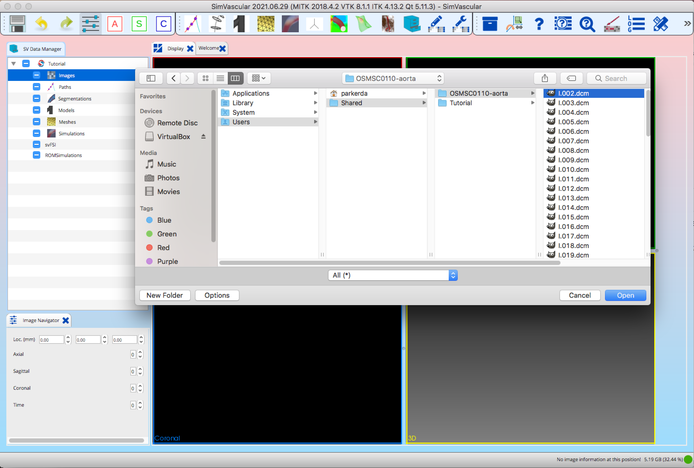 | Select the I.002.dcm file from the File Browser.
Press the Open Button. The series of DICOM files are read in. |
 |
Press the Yes Button in the QuestionPopup to store the image data as a VTK VTI file. |
 |
Press the Yes Button in the QuestionPopup to scale the image. |
 |
Press the OK Button to use the default 0.1 scaling factor.
The image is scaled by 0.1.
SimVascular does not have any explicit units. However, the geometry created in the pipeline does depend on the
image scale: a smaller scale creates smaller geometry. This is only important when performing simulations: the model
size must match the units used for certain simulation parameters and data (e.g. inlet flow rate).
|
 |
Enter aorta for the image name in the Image Name: TextBox Press the OK Button. |
 |
The image is displayed in the standard four-window view layout. Press the The image volume is saved as a VTK VTI file named aorta.vti in the Project’s Images directory. |
Create Vessel Paths
Creating an anatomic model based on medical image data requires constructing the geometry of a region of interest using image segmentation. SimVascular uses approximate vessel centerlines called a Paths to identify an anatomical regions of interest within an image volume. Paths are later used by the Segmentations Tool to construct a model of the vascular anatomy using a series segmentations generated from 2D image cross sections.
The following sections demonstrate how to create a path defining the main aorta and right iliac, and another for the left iliac. A detailed discussion about creating paths can be found in the SimVascular Modeling Guide / Path Planning documentation.
Create an instance of a Paths Tool for the aorta/right iliac
Create an instance of a Paths Tool named aorta used to define Path geometry for the main aorta and right iliac vessels.
| GUI | Description |
|---|---|
| 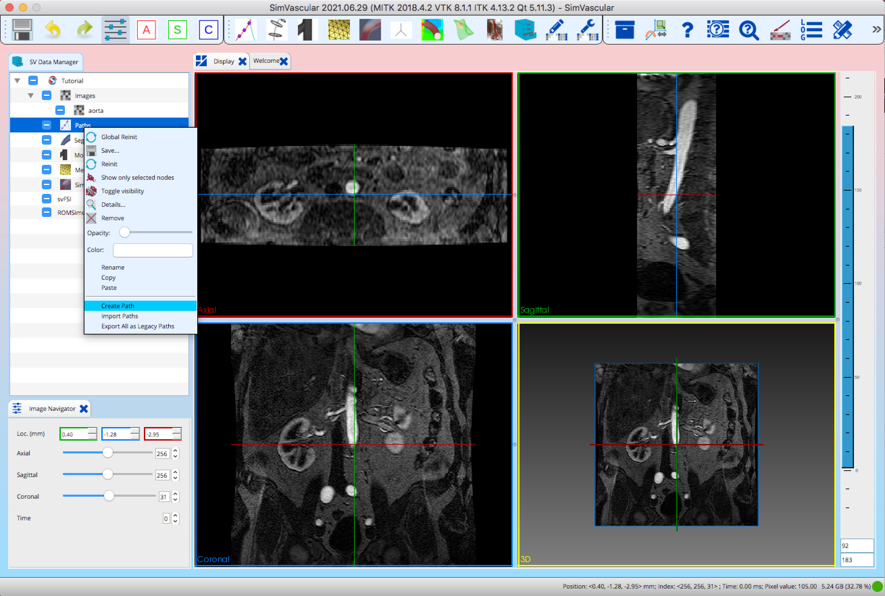 | Select the Paths Tool in the Data Manager with the right mouse button. Select the Create Path menu option. |
 |
A Create New Path DiaglogBox appears. Enter aorta for the Path name in the Path Name: TextBox From the Subdivision type ComboBox select Spacing Based. An Information Popup appears; press the OK Button. Press the Create New Path DiaglogBox OK Button. |

|
A Data Node named aorta (an instance of a Paths Tool) is created under the Data Manager Paths Tool Type. |
 |
Double-click on the Data Manager Paths / aorta Data Node with the left mouse button to bring
up the SV Path Planning Panel. Placing the mouse cursor over each GUI control in the SV Path Planning Panel displays a brief description explaining what the control does. Some GUI controls:
|
Create the aorta/right iliac Path
This section demonstrates how to create a set of points representing Path from the start of the aorta to the end of the right iliac arteries. Path points are added interactively by positioning crosshairs in the three 2D views to select the approximate center of a vessel lumen.
The crosshairs are moved using the left mouse button or the Image Navigator.
| GUI | Description |
|---|---|
 |
Using the left mouse button move the crosshairs in the Sagittal 2D View to the top of the aorta. Press the Add Button in the SV Path Planning Panel. The selected Path point is shown as a red marker in the 2D views and as a blue cube in the 3D view. The coordinates of the point are shown in the SV Path Planning Panel Control Point List Table. |
| 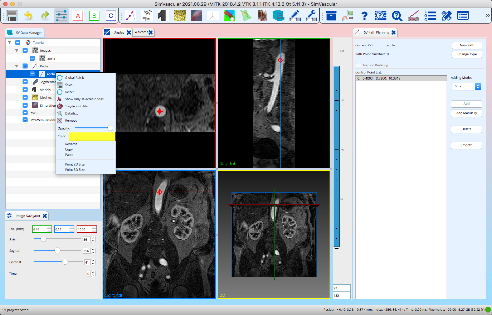 | Select the the Data Manager Paths / aorta Data Node with the right mouse button to display
the Data Node menu. The menu options specialized for Path Tool Data Nodes are
|
 |
Create several more Path points using the left mouse button to move the crosshairs in the 2D views and
pressing the Add Button. The coordinates of the Path points are shown in the SV Path Planning Panel Control Point List Table. Switch the view to a single 3D view. The Path points are shown as blue cubes. Move the mouse cursor over a Path point selects it: the Path point marker turns red and the point is highlighted in SV Path Planning Panel Control Point List Table. Press the |
 |
Selecting a Path point from the SV Path Planning Panel Control Point List Table
positions the crosshairs and moves the image scan slices so that they intersect at that point, the location
they had when the point was added.
|
Create an instance of a Paths Tool for the left iliac
Create an instance of a Paths Tool named left-iliac used to define Path geometry from the aorta/right iliac bifurcation to the end of the left iliac.
| GUI | Description |
|---|---|
 |
Select the Paths Tool in the Data Manager with the right mouse button. Select the Create Path menu option. |
 |
A Create New Path DiaglogBox appears. Enter left-iliac for the Path name in the Path Name: TextBox From the Subdivision type ComboBox select Spacing Based. An Information Popup appears; press the OK Button. Press the Create New Path DiaglogBox OK Button. |

|
A Data Node named left-iliac (an instance of a Paths Tool) is created under the Data Manager Paths Tool Type. |
| 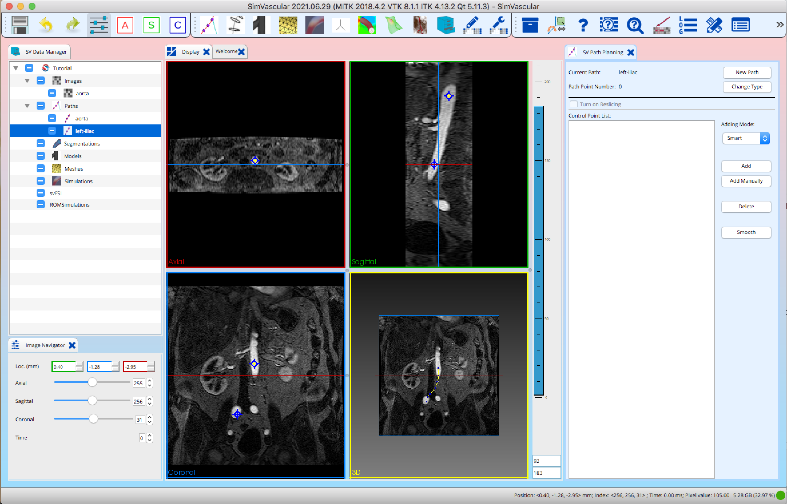 | Double-click on the Data Manager Paths / left-iliac Data Node with the left mouse button to bring
up the SV Path Planning Panel. Placing the mouse cursor over each GUI control in the SV Path Planning Panel displays a brief description explaining what the control does. |
Create the left iliac Path
This section demonstrates how to create a set of points representing a Path from the aorta/right iliac bifurcation to the end of the left iliac. Path points are added interactively by positioning crosshairs in the three 2D views to select the approximate center of a vessel lumen.
The crosshairs are moved using the left mouse button.
| GUI | Description |
|---|---|
| 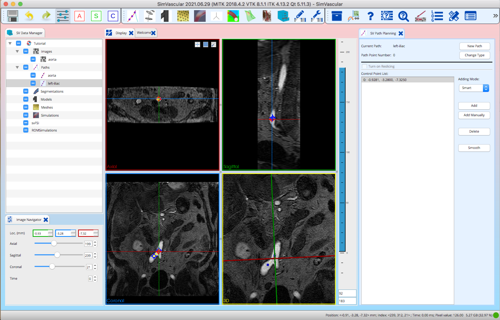 | Using the left mouse button move the crosshairs to a point inside the aorta near were it branches into the left
and right iliacs. Press the Add Button in the SV Path Planning Panel. The coordinates of the point are shown in the SV Path Planning Panel Control Point List Table. |
 |
Create several more Path points using the left mouse button to move the crosshairs in the 2D views and
pressing the Add Button. The coordinates of the Path points are shown in the SV Path Planning Panel Control Point List Table. Switch the view to a single 3D view. The Path points are shown as blue cubes. Move the mouse cursor over a Path point selects it: the Path point marker turns red and the point is highlighted in SV Path Planning Panel Control Point List Table. Press the |
Create Segmentations
Segmentation involves identifying vessel lumen boundaries from imaging data using various image processing methods. These boundaries are represented by closed curves and form the basis for solid model construction.
SimVascular supports several methods used to manually define lumen boundaries. These methods are useful when image contrast is poor and lumen boundaries are not well defined by variations in image intensity.
- Circle - Interactively select a center and radius, or input radius, to define a circle.
- Ellipse - Interactively select a center and two axis, or axes radii, to define an ellipse.
- Polygon - Interactively select a set of points defining a polygon.
- SplinePoly - Interactively select a set of points defining an interpolating smooth curve (spline).
SimVascular supports several methods used to automatically extract lumen boundaries based on variations in image intensity values.
- Level Set - Use image intensity and gradient to evolve a curve to the edge of a lumen boundary.
- Threshold - Use an image intensity value to define a boundary.
Paths created by Paths Tools are used to extract a series of 2D image slices from the image volume. Segmentation is then performed on each slice to extract a lumen boundary. Image points and intensity values used for segmentation are interactively selected from a 2D image using the left mouse button.
In SimVascular, a series of segmentations along a Path is called a Contour Group.
The following sections demonstrate how to create segmentations using the aorta and left-iliac Paths. A detailed discussion about segmentation can be found in the SimVascular Modeling Guide / Segmentation documentation.
Create an instance of a Segmentations Tool for the aorta/right iliac
Create an instance of a Segmentations Tool named aorta used to define a Contour Group for the main aorta and right iliac vessels.
| GUI | Description |
|---|---|
| 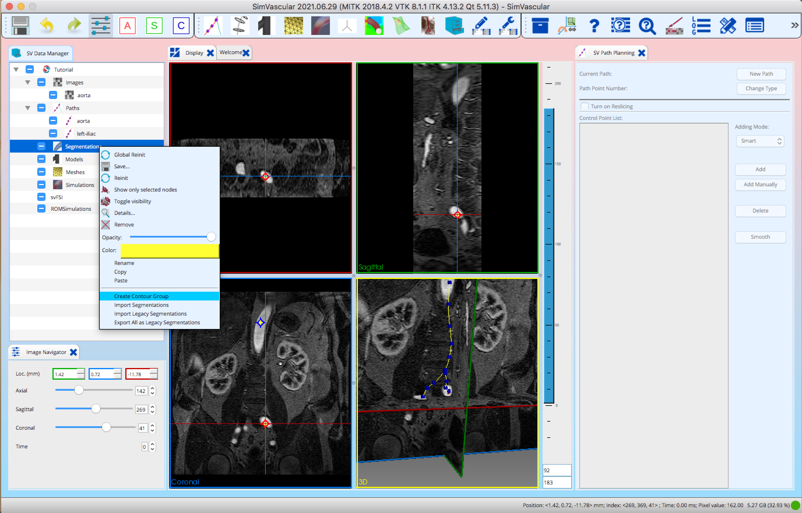 | Select the Segmentations Tool in the Data Manager with the right mouse button. Select the Create Contour Group menu option. |
 |
A Create Contour Group DiaglogBox appears. Select aorta for the Path name from the Select Path: ComboBox Enter aorta for the Contour Group name in the Group Name: TextBox Press the Create Contour Group DiaglogBox OK Button. |

|
A Data Node named aorta (an instance of a Segmentations Tool) is created under the Data Manager Segmentations Tool Type. |
 |
Close the SV Path Planning Panel by selected the X in its Tab. Double-click on the Data Manager Segmentations / aorta Data Node with the left mouse button to bring up the SV 2D Segmentation Panel. The Display layout is changed to two 2D views on the left and one 3D view on the right. The 3D view displays geometry from any Tool that is selected to be visible using the The upper left 2D view displays the 2D image slice; the lower the gradient of the 2D image slice used to visualize image edges. Image points and intensity values used for segmentation are interactively selected from the 2D views using the left mouse button. |
| |
Some GUI controls:
Segmentation methods: |
Create segmentations for the aorta/right iliac
This section demonstrates how to create a set of segmentations from the start of the aorta to the end of the right iliac arteries using the Level Set segmentation method.
| GUI | Description |
|---|---|
 |
In the Segmentations Tool Panel select the
The LevelSet sub-panel is displayed containing GUI controls used to set parameters controlling the level set computation (Stage 1 and Stage 2) and the resulting contour geometry. Select the Convert to Spline CheckBox to represent the level set contour as a smooth interpolating spline. |
 |
Select the The level set contour is displayed in all three views as a closed red curve segmenting the vessel lumen from surrounding tissue. The contour is added to the Contour List Table as 0:SplinePolygon,LevelSet, where 0 is the contour ID, SplinePolygon is geometric representation and LevelSet the segmentation method. |
 |
The upper left Axial view shows the level set contour as a closed red curve with square green markers
enclosing a straight red line with two green markers located in the contour center.
The blue and yellow markers in the center of the contour represent the location of a point on a path from which the 2D image is extracted. The 10 green markers represent the control points use to control the shape of the interpolating spline. Moving a control point alters the shape of the level set contour. The number of control points is changed using the Ctrl. No. TextBox. The straight red line with two green markers is the Contour Manipulator. The center control point is used to translate the contour center in the 2D image plane. The outer control point is used to contract/expand the contour. Positioning the mouse cursor over a control point highlights it in red. It can then be moved with the left mouse button. |
| 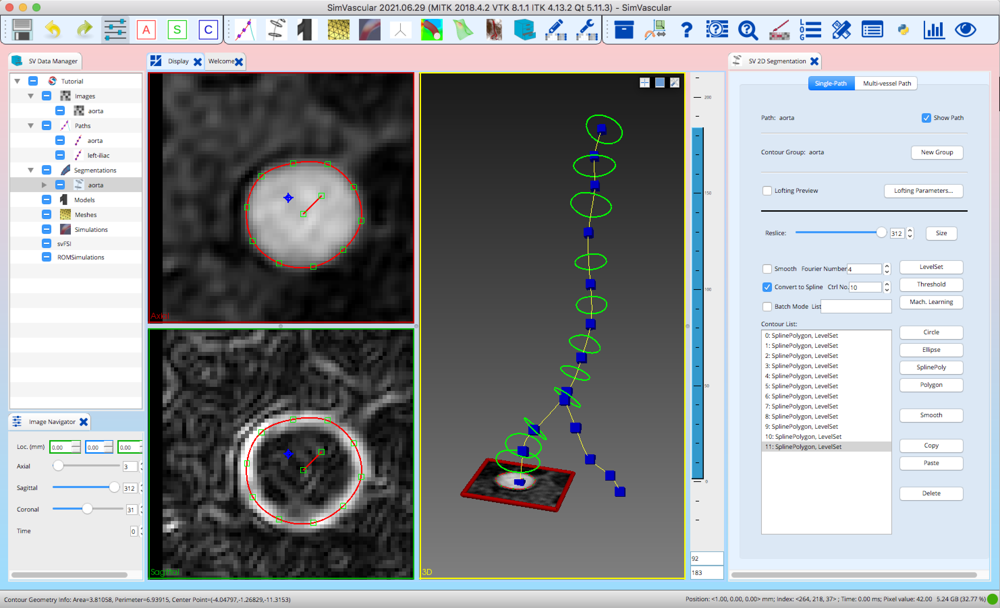 | Segmentations for the entire aorta/right iliac are created by moving the 2D slice plane to a new position along
the aorta Path using the Reslice Slider and selecting the
Press the |
| 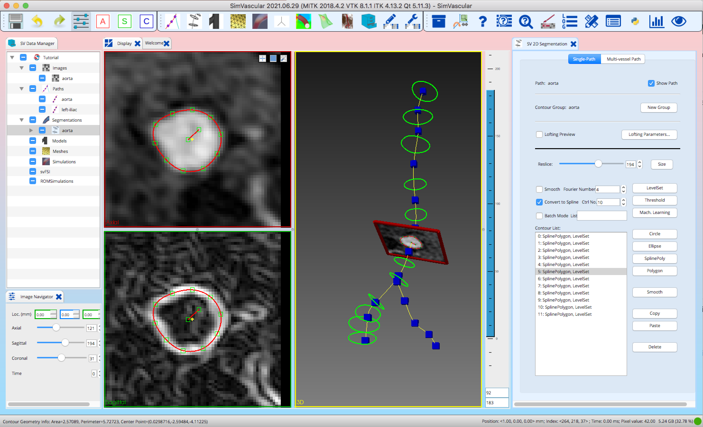 | Contours can be selected from the Contour List: Table or from the 3D view using the left
mouse button.
Once selected, a contour can be modified (e.g. change its segmentation method or parameters), copied/pasted, or deleted. |
| 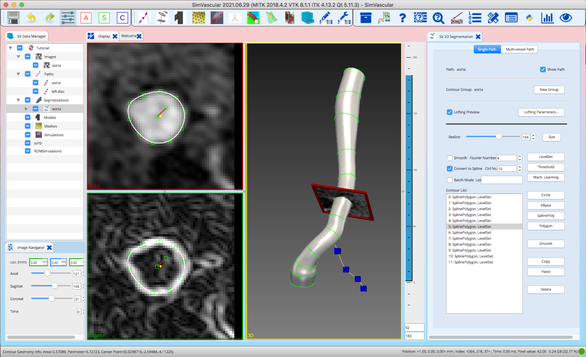 | The surface passing through the contours is visualized by selecting the Lofting Preview CheckBox.
This is the surface that will eventually be used to create a solid model so any surface features that would lead to a poor model (e.g. overlapping regions) should be identified and fixed. |
Create an instance of a Segmentations Tool for the left iliac
Create an instance of a Segmentations Tool named left-iliac used to define a Contour Group for the aorta/right iliac bifurcation to the end of the left iliac artery.
| GUI | Description |
|---|---|
| 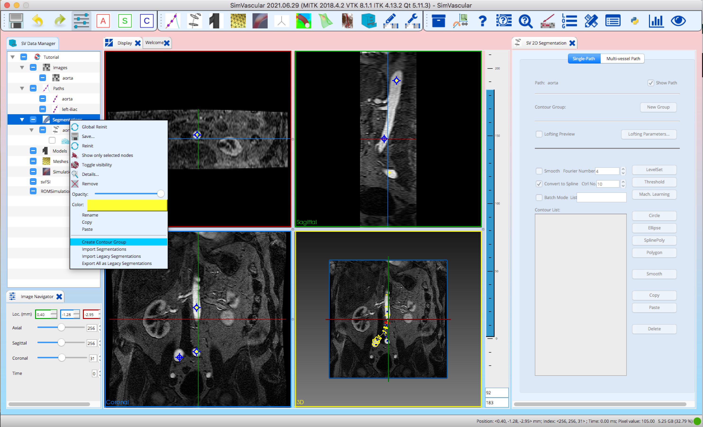 | Select the Segmentations Tool in the Data Manager with the right mouse button. Select the Create Contour Group menu option. |
| 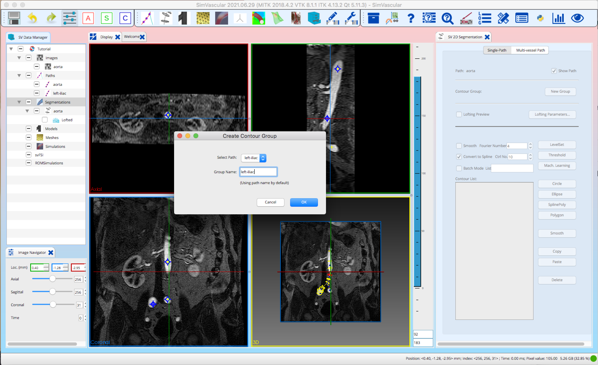 |
A Create Contour Group DiaglogBox appears. Select left-iliac for the Path name from the Select Path: ComboBox Enter left-iliac for the Contour Group name in the Group Name: TextBox Press the Create Contour Group DiaglogBox OK Button. |

|
A Data Node named left-iliac (an instance of a Segmentations Tool) is created under the Data Manager Segmentations Tool Type. |
 |
Double-click on the Data Manager Segmentations / left-iliac Data Node with the left mouse
button to bring up the SV 2D Segmentation Panel. The Display layout is changed to two 2D views
on the left and one 3D view on the right. The red rectangular region in the 3D view displays the 2D image slice extracted from the image volume. The slice is positioned and oriented using left-iliac Path geometry. The slice is moved along a Path using the Reslice Slider. The upper left 2D view displays the 2D image slice; the lower the gradient of the 2D image slice used to visualize image edges. Image points and intensity values used for segmentation are interactively selected from the 2D views using the left mouse button. |
Create segmentations for the left iliac
This section demonstrates how to create a set of segmentations from the aorta/right iliac bifurcation to the end of the left iliac artery. using the Level Set segmentation method.| GUI | Description |
|---|---|
 |
In the Segmentations Tool Panel select the
The LevelSet sub-panel is displayed containing GUI controls used to set parameters controlling the level set computation (Stage 1 and Stage 2) and the resulting contour geometry. Select the Convert to Spline CheckBox to represent the level set contour as a smooth interpolating spline. |
| 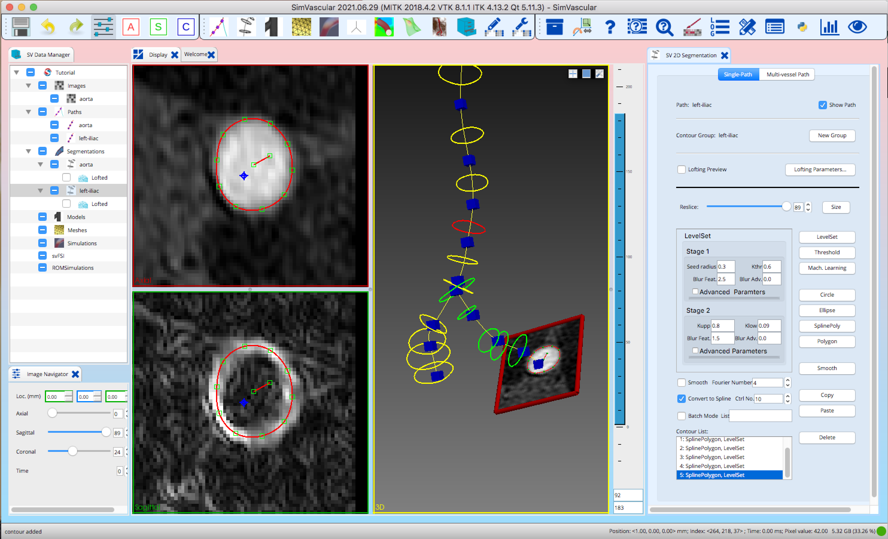 | Segmentations for the entire left iliac are created by moving the 2D slice plane to a new position along
the left-iliac Path using the Reslice Slider and selecting the
Press the |
 |
The surface passing through the contours is visualized by selecting the Lofting Preview CheckBox.
This is the surface that will eventually be used to create a solid model so any surface features that would lead to a poor model (e.g. overlapping regions) should be identified and fixed. |
| 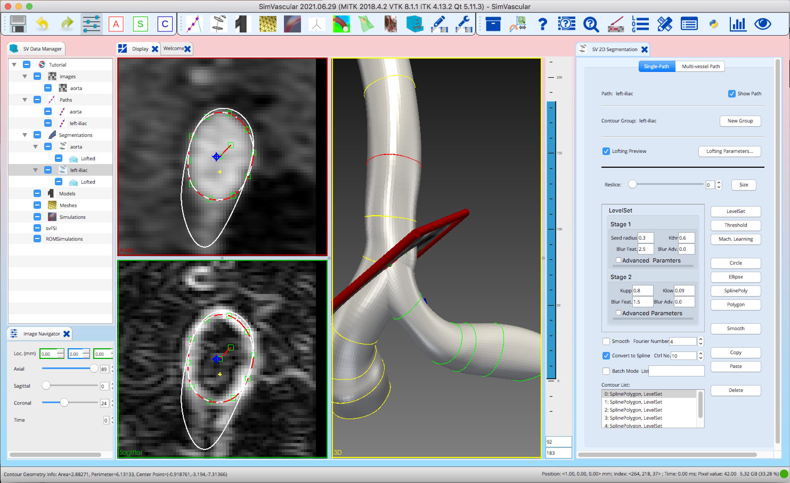 | Select the Lofted box under the Data Manager Segmentations / aorta Data Node
to visualize both the aorta and left-iliac lofted surfaces.
The upper left 2D Axial view displays the intersection of the 2D slice plane with the two surfaces as white lines. This shows that the left-iliac surface does not completely fit in the aorta. This could later cause problems when creating a model or generating a finite element mesh. |
 |
Select the outer control point of the Contour Manipulator to reduce the size of the first contour until
it completely fits in the aorta.
Press the |
Create Solid Model
A solid model is used as a geometric representation of a volume of vascular anatomy. It is created by joining together vessel surfaces fitted to groups of 2D segmentations. A solid model provides the geometric information needed to generate a finite element volumetric mesh.
A solid model represents a volume in space by a set of faces with well-defined boundary connected to form a closed surface. The solid model boundary faces are defined geometrically to be either polygonal or NURBS surfaces.
The lofted surface created from groups of 2D segmentations is a surface with open ends and is therefore not a solid. It is converted into a solid model by attaching planar surfaces (caps) to its open ends to form a closed surface.
SimVascular assigns a Face Type to each face in the solid model
- wall - A lofted surface representing the vessel wall.
- cap - The planar surface caps used to form a closed surface. These are Used to assign inlet and outlet boundary conditions for simulations.
SimVascular has two solid modelers
- PolyData - Faces are represented as a surface composed of triangles
- OpenCASCADE - Faces are represented as a NURBS surface
The PolyData is the solid modeler most often used to build solid models.
The following sections demonstrate how to create a PolyData solid model from the aorta and left-iliac segmentations. A detailed discussion about modeling can be found in the SimVascular Modeling Guide documentation.
Create an instance of a Models Tool for the aorta and iliacs
Create an instance of a Models Tool named aorta-iliacs used to create a model for the main aorta and iliac vessels.
| GUI | Description |
|---|---|
 |
Select the Models Tool in the Data Manager with the right mouse button.
Select the Create Model menu option. |
 |
A Create New Model DiaglogBox appears.
The Model Type: ComboBox is used to select the solid modeler. Leave it on PolyData. Enter aorta-iliacs for the Model name in the Model Name: TextBox Press the Create New Model DiaglogBox OK Button. |
 |
A Data Node named aorta-iliacs (an instance of a Models Tool) is created under the Data Manager Models Tool Type. |
 |
Select the Lofted CheckBox to toggle off the visibility of the lofted surfaces for both the aorta and left-iliac Segmentations Data Nodes. |
 |
Close the SV 2D Segmentation Panel by selected the X in its Tab.
Double-click on the Data Manager Models / aorta-iliacs Data Node with the left mouse button to bring up the SV Modeling Panel. |
| |
Some GUI controls:
|
 |
Select the |
Create a solid model of the aorta and iliacs
This section demonstrates how to create a PolyData solid model from the aorta and left-iliac segmentations.| GUI | Description |
|---|---|
 |
Select the A Create Solid Model DiaglogBox appears. This displays the names of the aorta and left-iliac Segmentations Data Nodes with a CheckBox. The CheckBoxs are used to select the segmentation lofted surfaces that will be joined together to create a solid model. Select the CheckBox for the aorta and left-iliac segmentations. Press the Create Solid Model DiaglogBox OK Button. |
| 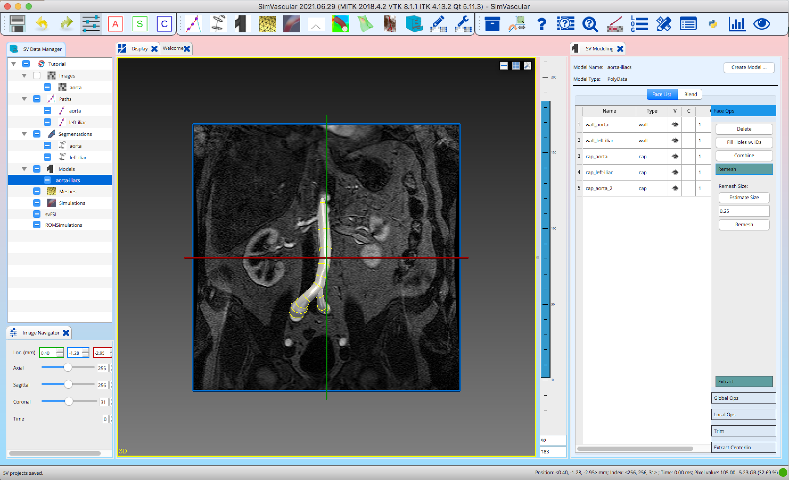 | The solid model has been constructed and is shown in the 3D View.
Select Press the |
| 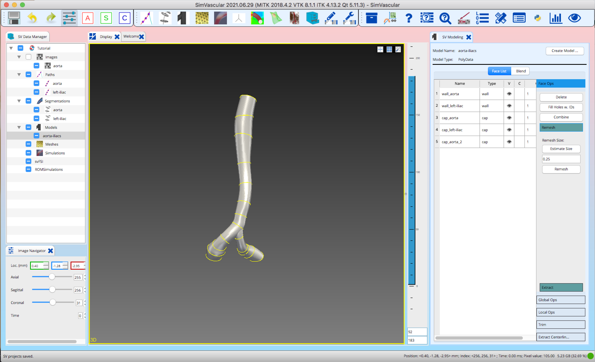 | The Face List Table lists the four Faces created by joining the aorta and
left-iliac segmentations into a complete solid model.
The Face List Table columns define Face attributes
|
 |
Select the Data Manager Paths and Segmentations CheckBox to toggle off the visibility of all paths and segmentation geometry. |
Create Finite Element Mesh
The continuous volume enclosed by a solid model of vascular anatomy is subdivided into discrete tetrahedral elements using mesh generation software. This finite element mesh is used by the SimVascular svSolver and svFsi computational fluid dynamics programs to simulate blood flow in a vascular network.
A good mesh is integral to finite element CFD simulation techniques. It enables computers to numerically solve the underlying governing fluid equations and simulate physical effects. The mesh quality influences the accuracy, convergence, and speed of the simulation process.
The following sections demonstrate how to create a finite element mesh from the aorta-iliacs PolyData solid model
using the TetGen mesh generation software. A detailed discussion about mesh generation can be found in the SimVascular
Meshing Guide documentation.
Create an instance of a Meshes Tool for the aorta-iliacs model.
Create an instance of a Meshes Tool named aorta-iliacs used to create a model for the main aorta and iliac vessels.
| GUI | Description |
|---|---|
 |
Select the Meshes Tool in the Data Manager with the right mouse button.
Select the Create Mesh menu option. |
 |
A Create Mesh DiaglogBox appears.
The Select Model: ComboBox is used to select a model. Leave it on aorta-iliacs. The Mesh Type: ComboBox is used to select the mesh generator. Leave it on TetGen. Don’t enter anything in the Mesh Name: TextBox; by default it will use the aorta-iliacs model name for the mesh. Press the Create Mesh DiaglogBox OK Button. |
| 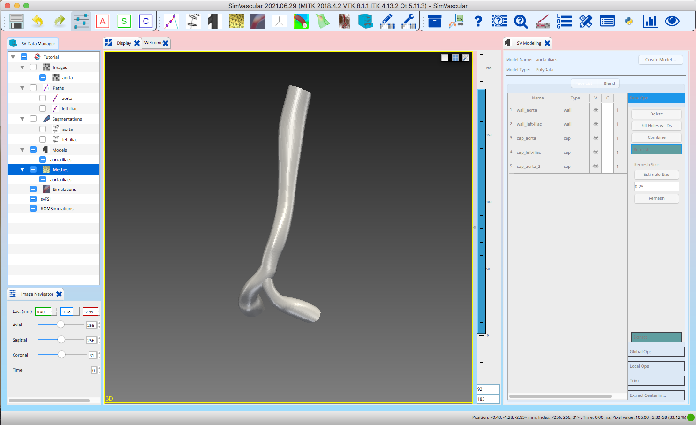 | A Data Node named aorta-iliacs (an instance of a Meshes Tool) is created under the
Data Manager Meshes Tool type.
Select the Data Manager Models CheckBox to toggle off the visibility of the solid model segmentation geometry. Close the SV Modeling Panel by selected the X in its Tab. Double-click on the Data Manager Meshes / aorta-iliacs Data Node with the left mouse button to bring up the SV Meshing Panel. |
Generate a finite element meshes from the aorta-iliacs model.
The section demonstrates how to generate a finite element mesh from the aorta-iliacs PolyData solid model.| GUI | Description |
|---|---|
| 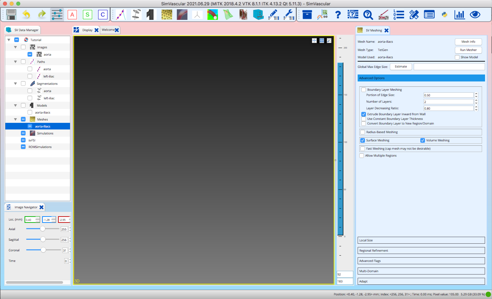 | Some GUI controls:
Select the Select the Select the Yes Button on the QuestionPopup asking to continue. |
| 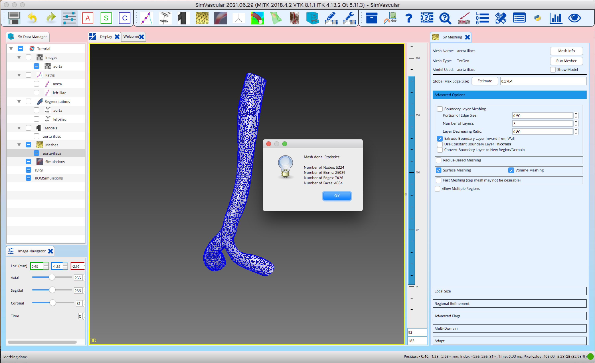 | A InformationPopup is displayed showing the number of elements generated.
Press the InformationPopup OK Button. Press the |
Create CFD Simulation
Computational fluid dynamics (CFD) simulations permit detailed analyses of blood flow and pressure in patient-specific models of the human vasculature. CFD solvers used for such simulations must accommodate the sophisticated boundary conditions, physiologic models and physics specific to cardiovascular modeling.
The Simulations Tool has functionality to assign boundary conditions, material properties, and set parameters for the SimVascular svSolver CFD solver. svSolver can be run through the GUI for testing a simulation setup. However, for simulating physiological relevant time scales the simulation files are generated on a desktop, copied to a high performance computing (HPC) cluster, and run in parallel there.
The following sections demonstrate how to setup a CFD simulation for svSolver using the aorta-iliacs solid model
and finite element mesh. A detailed discussion about CFD simulations can be found in the SimVascular
Simulation Guide documentation.
Create an instance of a Simulations Tool for the aorta-iliacs model.
Create an instance of a Simulations Tool named aorta-iliacs used to create a CFD simulation of blood flow in the main aorta and iliac vessels.
| GUI | Description |
|---|---|
 |
Select the Simulations Tool in the Data Manager with the right mouse button.
Select the Create Simulation job menu option. |
 |
A Create Simulation Job DiaglogBox appears.
The Select Model: ComboBox is used to select a model. Leave it on aorta-iliacs. Enter aorta-iliacs in the Job Name: TextBox. Press the Create Simulation Job DiaglogBox OK Button.
A solid model is first selected for the simulation because it identifies the Faces used to define boundary
conditions. A mesh generated from the model is later selected. Note that several different meshes can be generated
from the same solid model using different meshing parameters (e.g. edge size).
|
| 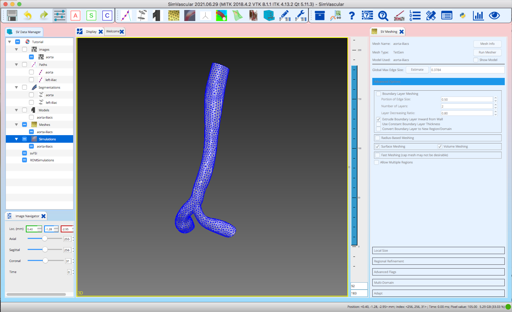 | A Data Node named aorta-iliacs (an instance of a Simulations Tool) is created under the
Data Manager Simulations Tool type.
Close the SV Modeling Panel by selected the X in its Tab. Double-click on the Data Manager Simulations / aorta-iliacs Data Node with the left mouse button to bring up the SV Simulation Panel. |
 |
SV Simulation Panel is a ToolBox containing multiple pages of GUI widgets identified by a section of
rectangles with text at the Toolbox bottom. Selecting a rectangle shows another page of GUI widgets.
The ToolBox Basic Parameters page is used to set fluid physical parameters and initial conditions (ICs). Use the default parameters values. Select the ToolBox Inlet and Outlet BCs page. |
Set inlet and outlet boundary conditions.
This section demonstrates how to set the simulation inlet and outlet boundary conditions. The centimeter–gram–second (CGS) system of units is used.The inlet boundary condition is a steady velocity profile with values given in the steady.flow file.
1.0 -100
which is interpreted as a constant inlet volumetric flow rate of 100 cc/s over the time interval [0.0, 1.0] seconds.
The left and right iliac outlets are set to a resistance boundary condition with a value of 16000 dynes·s/cm5.
| GUI | Description |
|---|---|
 |
The ToolBox Inlet and Outlet BCs page is used to set boundary conditions for the mesh inlet and outlet faces.
The Name / BC Type / Values Table contains the name of all Model Faces that have a cap Face Type (set in the Models Tool). To set the inlet velocity boundary condition double click with the left mouse button on cap_aorta in the Name column. |
 |
A Set Inlet/Outlet BCs DialogBox appears.
Select the Flow rate (from File) 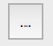 icon to bring up a FileBrowser. Select the steady.flow file from the Tutorial/flow-files directory. Press the Set Inlet/Outlet BCs DiaglogBox OK Button. |
 |
The cap_aorta boundary condition BC Type is now set to Proscribed Velocities.
To set the outlet boundary condition for the left iliac double click with the left mouse button on cap_left-iliac in the Name column. |
 |
A Set Inlet/Outlet BCs DialogBox appears.
From the BC Type: ComboBox select Resistance. Enter 16000 into the Resistance: TextBox Press the Set Inlet/Outlet BCs DiaglogBox OK Button. |
| 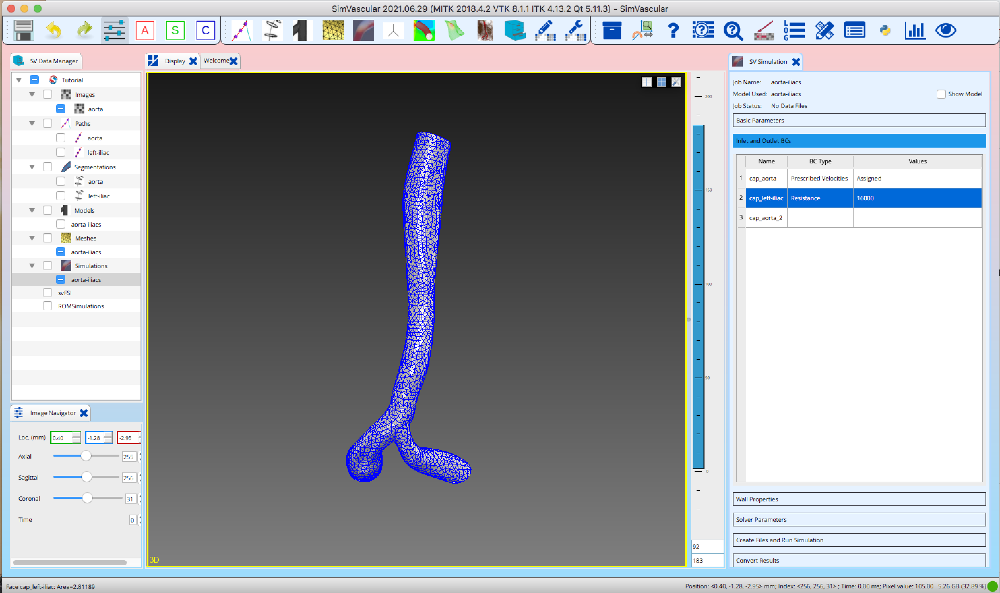 | The cap_left-iliac boundary condition BC Type is now set to Resistance.
To set the outlet boundary condition for the right iliac double click with the left mouse button on cap_aorta_2 in the Name column. |
| 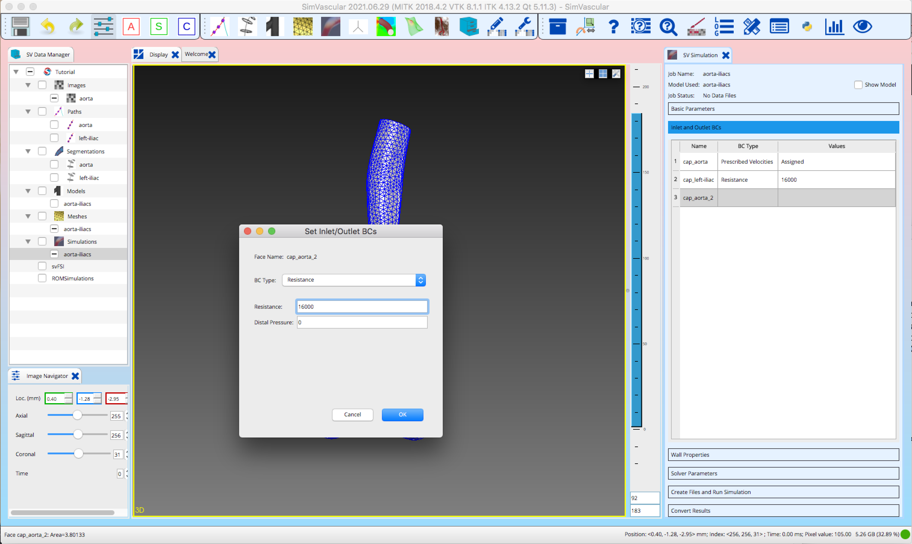 | A Set Inlet/Outlet BCs DialogBox appears.
From the BC Type: ComboBox select Resistance. Enter 16000 into the Resistance: TextBox Press the Set Inlet/Outlet BCs DiaglogBox OK Button. |
| 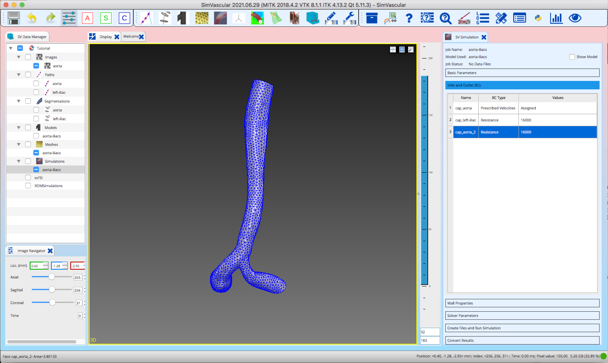 | The cap_aorta_2 boundary condition BC Type is now set to Resistance.
Press the Select the ToolBox Solver Parameters page. |
Set solver parameters.
This section demonstrates how to set the simulation solver parameters.The number of simulation time steps and time step size determines the simulation physical time. A simulation for 500 time steps using a time step size of 0.001 simulates a physical time = (500 time steps) x (0.001 time step size) = 0.5 seconds.
The value of the time step size is an important factor contributing to the stability, convergence, and reliability of a simulation. The value of the time step size depends on the size of the finite element mesh and type and values used for boundary conditions.
A detailed discussion about solver parameters can be found in the SimVascular Simulation Guide / Solver Parameters documentation.
| GUI | Description |
|---|---|
| 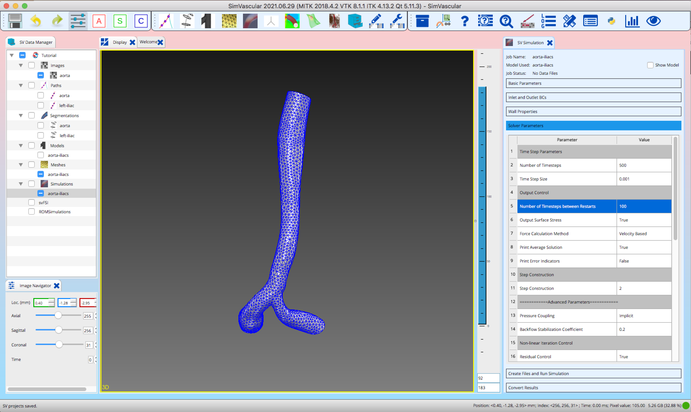 | The ToolBox Solver Parameters page is used to set the parameters controlling svSolver
solution and output. Parameter values are entered by clicking with the left mouse button on the appropriate
TextBox.
The set the parameters as follows
Select the ToolBox Create Files and Run Simulation page. |
Run the simulation.
This section demonstrates how run the simulation.The svSolver program can be run as a single process using one processor (core) or in parallel using two or more processors. svSolver uses the Open MPI implementation of the Message Passing Interface (MPI) to run in parallel. The Open MPI libraries must be installed in order to run svSolver in parallel. In this demonstration the svSolver program is run on a single processor.
| GUI | Description |
|---|---|
 |
The ToolBox Create Files and Run Simulation page is used to run svSolver.
Select the aorta-iliacs from the Choose Mesh: ComboBox. Select the Create Data Files for Simulation Button. |
| 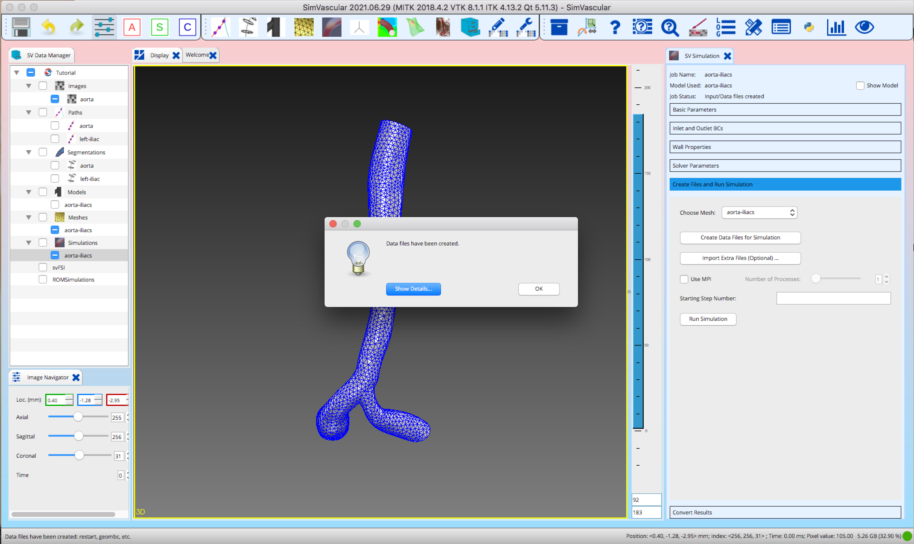 | An InformationPopup appears showing that the simulation files have been created.
Press the InformationPopup OK Button. Press the Run Simulation Button. The svSolver program is run on a single processor and should take several minutes to complete.
The svSolver program can be run in parallel by selecting the Use MPI CheckBox and setting the
Number of Processors Slider to 2 or larger.
|
| 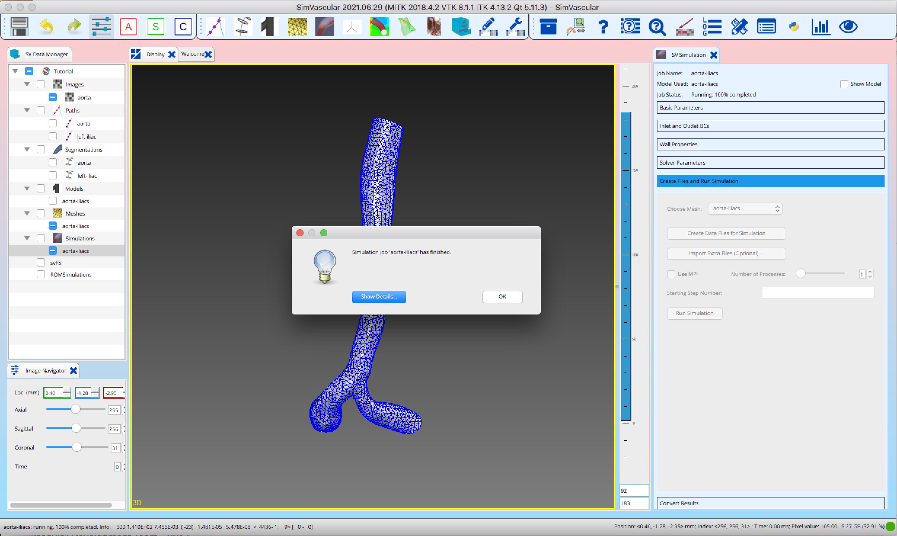 | An InformationPopup appears showing that the simulation has successfully finished.
Press the InformationPopup Show Details Button. |
 |
A ScrollingTextBox appears showing the simulation history: time step, CPU time in seconds,
measure of the nonlinear residual, etc.
Press the InformationPopup Show Details Button. Press the InformationPopup OK Button. Select the ToolBox Convert Results page. |
Convert simulation results.
This section demonstrates how to convert the simulation results into VTK format files for visualization.| GUI | Description |
|---|---|
 |
The ToolBox Convert Results page is used to convert svSolver results files into VTK format files.
GUI controls:
Select the Convert … Button. |
 |
A FileBrowser appears.
Navigate to the Tutorial/Simulations/aorta-iliacs directory. Select the FileBrowser Open Button. |
 |
An InformationPopup appears showing that the simulation results files have been converted.
Select the InformationPopup OK Button. Converted simulation results have been written to Tutorial/Simulations/aorta-iliacs/aorta-iliacs-converted-results.
all_results-averages-from_cm-to-mmHg-L_per_min.txt all_results_00200.vtu
all_results-averages.txt all_results_00300.vtp
all_results-flows.txt all_results_00300.vtu
all_results-pressures.txt all_results_00400.vtp
all_results_00000.vtp all_results_00400.vtu
all_results_00000.vtu all_results_00500.vtp
all_results_00100.vtp all_results_00500.vtu
all_results_00100.vtu average_result.vtp
all_results_00200.vtp
The .vtp files are VTK format files contain results for the mesh surface.
The .vtu files are VTK format files contain results for the mesh volume.
The .text files are text files containing velocity and pressure results averaged over inlet and outlet Faces.
The VTK format files can be visualized using ParaView. |
Summary
This Tutorial has demonstrated how to use the SimVascular image-based modeling pipeline to create patient-specific geometric models suitable for CFD blood flow simulations. It should provide a foundation for creating custom models and performing simulations applicable to a variety of research areas.
The SimVascular User Guides and Clinical Cases documentation provides more detailed information about all the topics covered in this Tutorial.
The SimVascular Online Tutorials video series provides live demonstrations by experienced users building models and setting up simulations for different applications.
The SimVascular Forum is an additional resource for seeking answers for specific questions. Searching the Forum can be very helpful for providing tips and solutions to any SimVascular quirks and limitations.
Functionality not supported by the SimVascular GUI may be implemented using the Python API.